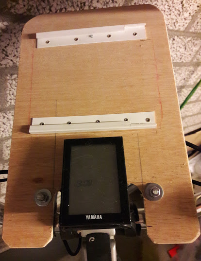
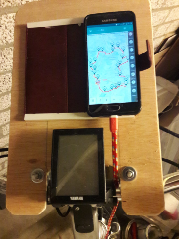
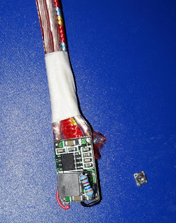
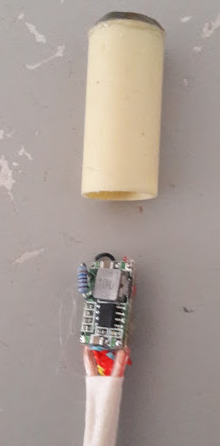
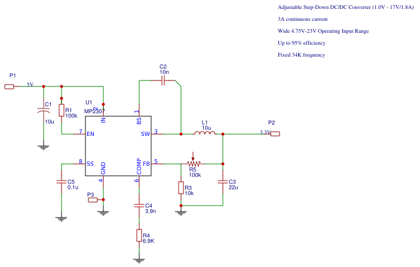
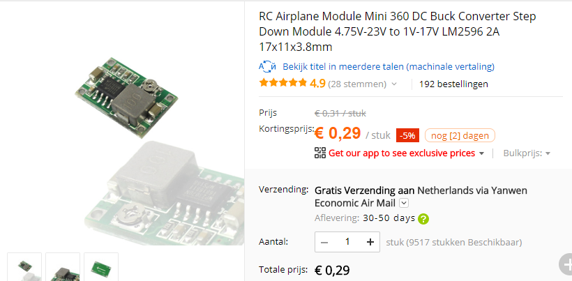

Fietskaarthouder
24 July, 2018
16:21
Niet tevreden over de op de markt verkrijgbare smartphone-houders voor de fiets, maar eens zelf geprobeerd iets te fabriceren.
Eisen
Belangrijke eisen | Minder belangrijke eisen |
|
|
Eerste Resultaat
De basis wordt gevormd door een watervast multiplex plankje van 6mm dik. Dit plnakje is met ijzeren beugels (verwarmingspijp) op het stuur geklemd. De smartphone kan in twee plastic strips worden geschoven. | De smartphone wordt geborgd door een spijker bovenin in het midden (het hoesje heeft daar een metalen holnietje zitten. De laadkabel wordt via een buck converter gevoed uit de voorlamp van de fiets. |

| 
|
Smartphone Oplader
Voor de oplader wordt een mini-dc-360 buckconverter gebruikt. Deze kan ongekoeld 1 A leveren, heeft een lage drempelspanning, is heel klein en kost bijna niets.
De 1 slags potmeter, regelt het hele bereik van 5 tot 23 V en dus onbruikbaar voor op een trillende fiets. Vandaar dat deze is vervangen door een vaste weerstand van 36 kOhm. | De schakeling wordt ingegoten met hot-glue in een stukje standaard elektrabuis (3/8") |

| 
|
https://cdn-shop.adafruit.com/datasheets/MP2307_r1.9.pdf
De spanning op FB bedraagt 0.925V.
Met een vaste weerstand van 36 kOhm wordt een uitgangsspanning van 5.1 Volt geraliseerd.


Created with Microsoft Office OneNote 2007
One place for all your notes and information